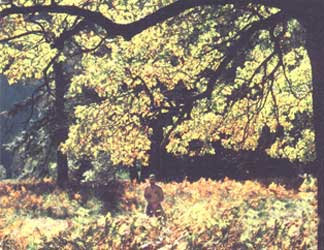

Since you can find oaks in almost every part of the United States,it's easy to locate a suitable acorn hunting ground. Foraging in the wilds ... or even among ornamental oaks in a city park ... can provide you with a bountiful harvest of kernels.